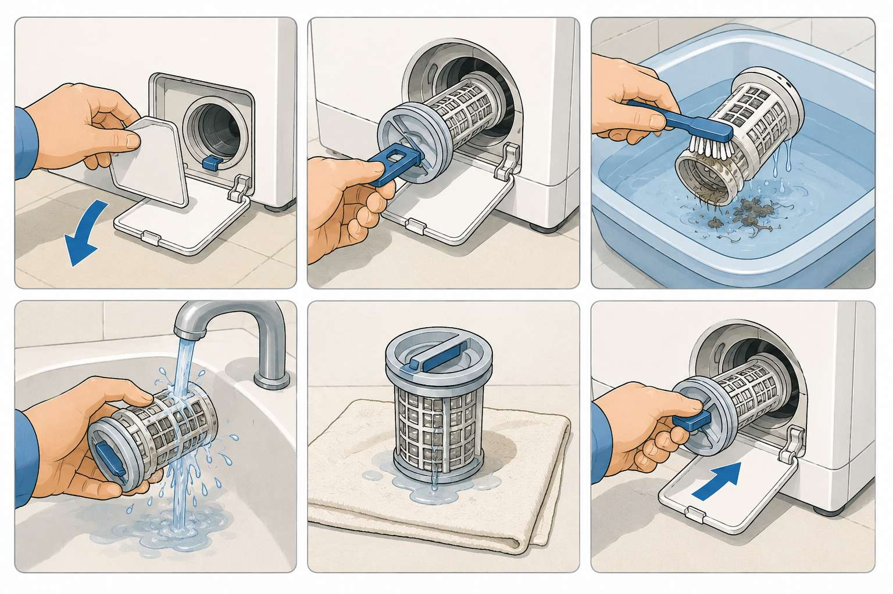
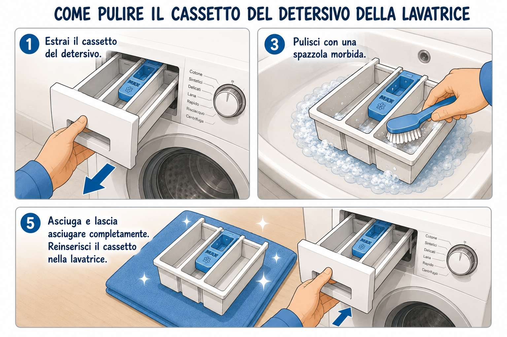
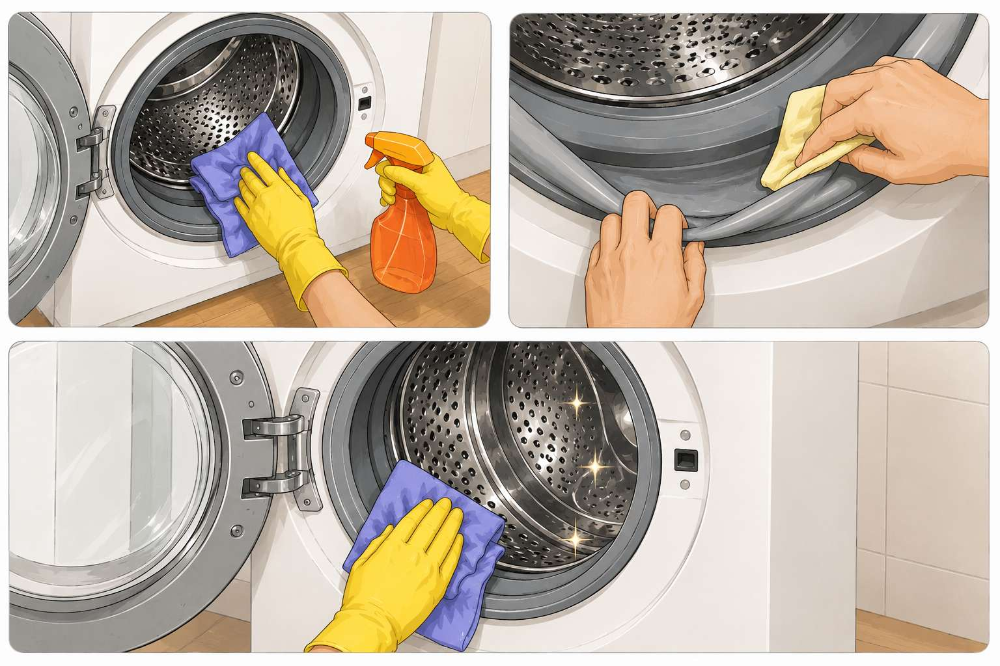
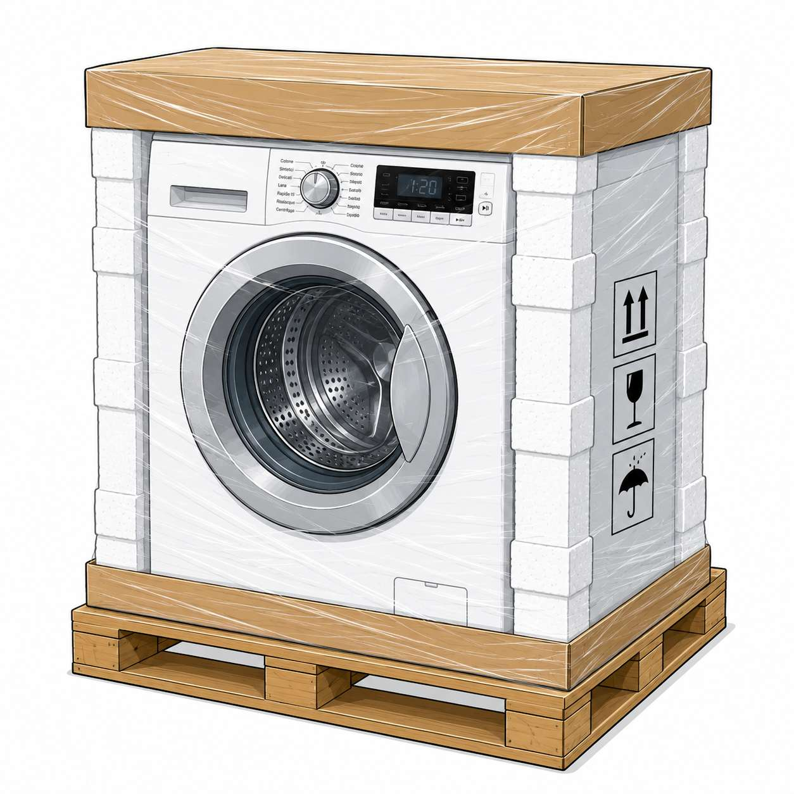

Attenzione — Sicurezza
Prima di eseguire gli interventi di questa scheda di manutenzione, valutare i potenziali rischi e condizioni pericolose che richiedono la compilazione del DC-85 e leggere il DC-82.

Aprire lo sportellino in basso. Prima di svitare il tappo, porre un recipiente o un panno assorbente davanti al filtro per raccogliere l'acqua residua. Svitare il tappo e rimuovere i residui.

Estrarlo e pulirlo per rimuovere i residui di sapone. Prima di riporlo, asciugare con un panno.

Eseguire un ciclo a vuoto a 90° con prodotto apposito. Al termine asciugare le guarnizioni con un panno. Accertarsi che le guarnizioni o altri componenti non siano danneggiati.
Attenzione: questa manutenzione deve essere effettuata in linea generale ogni 2–3 mesi. Si raccomanda tuttavia di eseguirla prima del trasporto verso il deposito, in quanto la lavatrice rimarrà inutilizzata per diversi mesi — questo eviterà lo sviluppo di cattivi odori e muffe.

Posizionamento
La lavatrice deve essere posizionata sopra un pallet in maniera stabile e in posizione verticale.
Fissaggio
Il prodotto deve essere avvolto e bloccato al pallet con nastro di carta per garantirne la sicurezza durante il trasporto.
⚠ Importante
NON CAPOVOLGERE MAI LA LAVATRICE